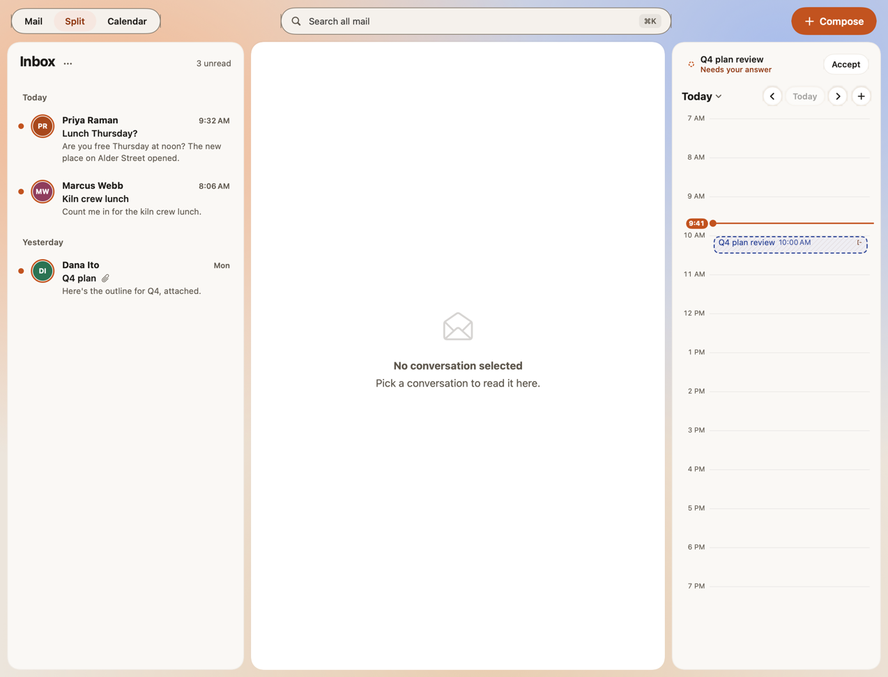
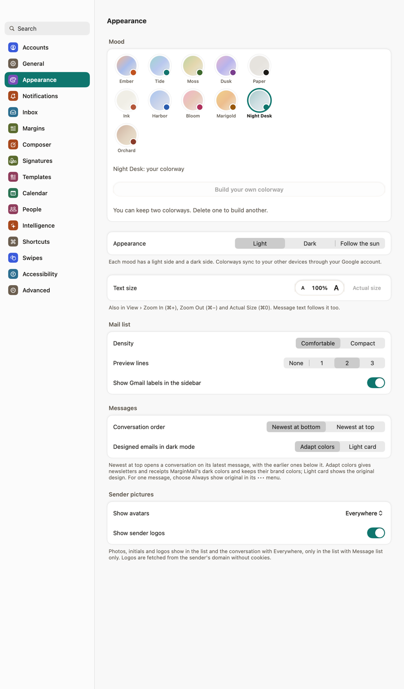

Microsoft 365 is part of the family now.
Release notes
MarginMail 1.0 (5)
Fri, Nov 6 · Beta
MarginMail now works with Microsoft accounts: Outlook mail, calendar, contacts and files from Microsoft 365 or Outlook.com, on their own or beside your Google accounts in one inbox.




Also in this build
- Your settings, notes and snoozes stay in step across your Macs, encrypted so only your own devices can read them.
- New colorways: build your own in Settings › Appearance; text in every mood stays easy to read in light and dark.
- Fixed: dragging a name between To, Cc and Bcc, or into another message, works again.